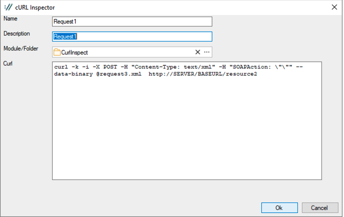
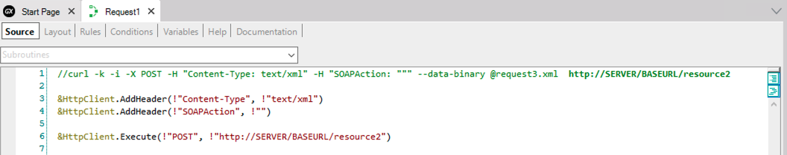

The cURL Inspector Wizard, located under Tools > Application Integration, allows you to create a Procedure object and the variables required to emulate a specific cURL script using GeneXus code.
Enter a Name, Description, and a valid cURL script as shown below:
curl -k -i -X POST -H "Content-Type: text/xml" -H "SOAPAction: \"\"" --data-binary @request3.xml http://SERVER/BASEURL/resource2
It looks as follows:

Optionally, you can indicate a folder where the object will be stored in the KB.
After confirming the dialog, a Procedure object will be created:

For further information on how to consume a service, see: Consuming web services in GeneXus
Since GeneXus 17 Upgrade 6.
| Backlinks |
| GeneXus 17 Upgrade 6 |